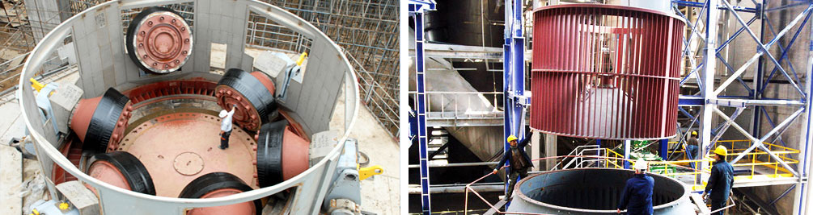
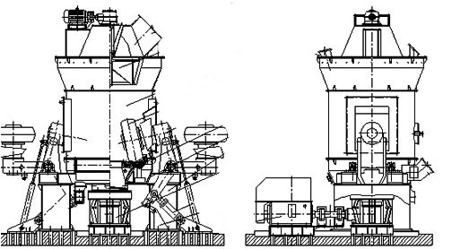

Vertical roller mill as a set of crushing, grinding, transportation in one of the large grinding equipment, is a milling device for the milling industry in our country is very important. Vertical roller mill has the most important two types: LM vertical roller mill and lum ultrafine vertical roller mill. The two devices in the design of absorb advanced milling technology.
LM vertical roller mill and LUM ultrafine vertical roller mill with different functions, but overall has strong production capacity and low operating cost advantages, in the production line not only strong production capacity and easy maintenance, low operating costs, two vertical milling machine have their own advantages, service in different milling production line. They can be used in the production of cement, calcite, quartz, iron ore and other, including metallurgy, chemical industry, many industry demand for raw materials and devices have many different types.
LM vertical roller mill and LUM ultrafine vertical roller mill two devices also have many different at the beginning of, for example, can be the size of the production of material particle size, for example between each kind of equipment of different types in shape, production capacity, and so on are not the same, these different makes equipment uses are not the same, so at the time of production can choose corresponding vertical milling machine equipment according to the needs of production engineering, which can better meet the needs of production.
Vertical roller mill is widely used in cement, electric power, metallurgy, chemical industry, non metal mine industry, is mainly used for the massive, granular and powdery materials are ground into powder materials.
The selection of the vertical roller mill is based on the speed of the motor to drive the rotation of the rotating wheel and the formation of the vortex effect of the powder on the role of the. The speed of the blade is adjusted according to the size of the particle size of the product. To obtain a more fine-grained powder midnight, raise the blade speed, the coarse powder due to its gravity drop into the grinding chamber of regrinding and qualified finished powder through the blade with the air suction to the cyclone dust collector in.

Vertical roller mill operation ability, the structure is very compact layout. Vertical mill main wear parts including select powder machine, grinding roller device, the grinding disc device, pressure device, a speed reducer, a motor, a casing, grinding roller device main role is the material of rolling and crushing, to ensure that the finished product fineness separator is a kind of efficient and energy-saving powder selecting device.
The grinding disc device to the output shaft fixed on the reducer, and the roller together to realize the material grinding. The pressure device is based on the material hardness and material standard by changing the roller pressure on the material to produce different breaking strength.
Wear parts are very important parts of the vertical roller mill operation, but also play a very important role in the production process, so the process of production and installation, maintenance, etc., to pay attention to the problem is very many, here is to introduce the process of installation, vertical roller mill operation to pay attention to what.
Vertical roller mill operation maintenance work is very important, do a good job maintenance work not only to extend the service life of the machine, but also to reduce the operating costs of the machine, but also to ensure that the machine's size of the uniform. Good machine maintenance, mainly to do the following aspects of the work: machine lubrication,replacement of wear parts and the fastening wear parts.
Vertical roller mill itself is the production of industrial equipment, the mass production of industrial dust will always be a certain degree of pollution in the machine. Dust pollution in the machine, the machine bearings and other parts of the consequences of pollution caused by the most serious, into the main city will cause the internal friction between the bearing increased, resulting in bearing heat, wear and a series of phenomena, and even cause damage to the machine. In order to prevent the dust with the serious pollution of the machine, we must do a good job in the lubrication of the mill.
There are two kinds of lubrication in the vertical roller mill operation process: rare and grease lubrication. Located in the vertical grinding mill reducer internal lubrication oil can be carried away by dilute oil bearing dust impurities and heat, the protection of bearing less dust pollution, while protecting the bearing to avoid heat damage. In the upper part of the vertical roller mill, the grease lubrication can reduce the friction between the bearings and reduce the damage probability.
The vertical milling machine is made up of many parts, such as the screw. The loose of any one of the fixed parts may cause the destruction of the mill. Hear abnormal noise in the mill work should also stop to check if there is a loose.